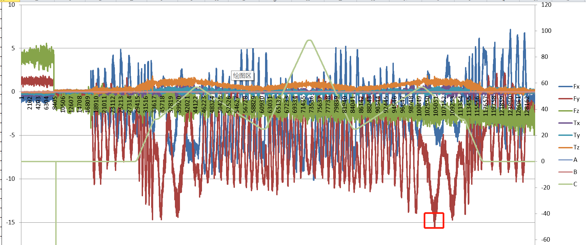
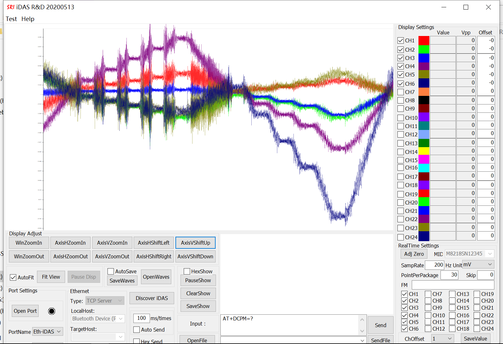

Home
最近做一个医疗机器人，上面安装了力矩传感器，为了防止机器人撞到其他设备或者人。客户要求力矩响应在50N以上就要机器人停止运动，所以传感器本身的输出波动要小于15N，否则很容易误触发。
由于这个项目控制器是采用的其他家的，他们在力矩传感器调试这边就简单导入了厂商的xml，读取传感器实时数据，然后使用卡尔曼kalman滤波，对当前负载进行重力补偿一下就输出了。
前面调试了2个星期，即使空载，在只是大范围转动C角时，输出始终有个别数据超出15，所以反复调试各种修正系数，但是没有多大效果。

所以就想着加些滤波及对重力补偿重新建模，但是由于控制器供应商那边的技术人员比较忙，好多功能没有增加，只是让我这边反复调整kalman filter的Q、R值，以及修正算法中的各个系数。调试了一两天，只能勉强满足无负载和小负载情况下慢速运动机器人，但是不能满足客户验收标准的速度。
所以自己就吃饱了准备做个简单的“Qt界面+各种filter+重力补偿”程序，主要验证一下力矩传感器最优滤波算法(卡尔曼、FIR、IIR...),以及重力补偿中具体各参数关联性。
下面是宇立传感器自带的软件iDAS RD.exe界面，注意，这个界面是固定大小，在小分辨率的电脑上是无法显示完全的，至少要1577*1200以上。

用厂商软件连接RS232采取的数据，9:50前采样频率是400Hz,之后是200Hz：
iDASRD Channel Data 2022-03-04_09-42-06.txt
iDASRD Channel Data Speed50 2022-03-04_10-21-27.txt
iDASRD Channel Data 2022-03-04_09-59-18.txt
所有数据打包.zip